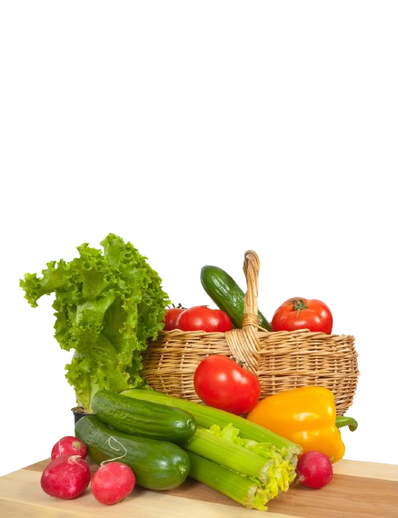

Impact
Cuisine durable
Réduire son empreinte carbone en cuisinant local


« Chaque panier livré représente 1,2 kg de CO₂ économisé »
Téléchargez notre guide transition cuisine durable
Un PDF de 20 pages avec des recettes, des conseils pratico-pratiques et des retours d'expérience de nos partenaires.
Télécharger le guide